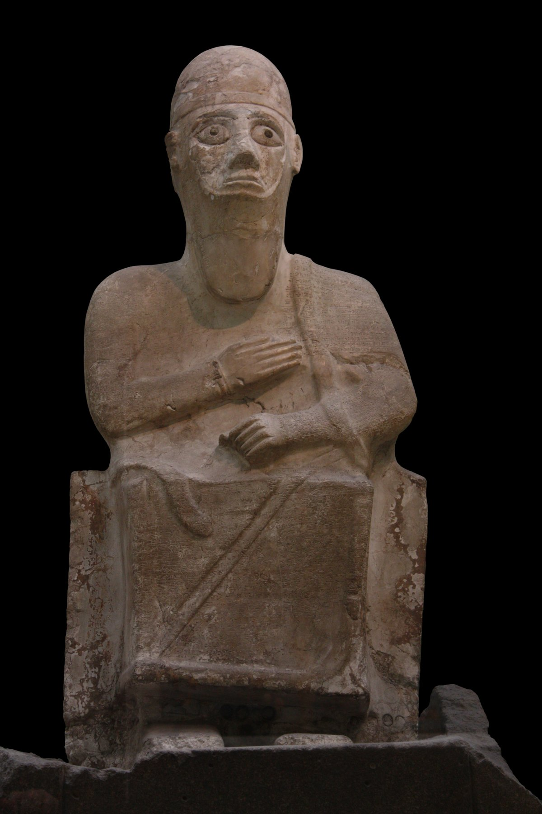

Statue of Idrimi

- Find Name
- Statue of Idrimi
- Description
- A seated statue of King Idrimi of Alalakh, carved of white magnesite, covered with a 104-line cuneiform inscription in a provincial dialect of Akkadian, found by Leonard Woolley's team in 1939 in a secondary context in a temple at Tell Atchana (ancient Alalakh) in modern Turkey, and now in the British Museum. The inscription tells how Idrimi fled Aleppo after a crime, settled with his mother's people at Emar, left to join the Hapiru (Habiru) in Ammiya in the land of Canaan, lived among them for seven years, made a treaty with Barattarna, king of Mittani, and then reconquered Alalakh by a seaborne attack and reigned for 30 years.
- Historical Period
- Late Bronze Age
- Evidence Class
- Contextual
- Interpretations
- The statue's historicity is debated: it was found in a level several centuries after Idrimi lived, though Jacob Lauinger dates statue and inscription to c. 1400-1350 BC, only 50-100 years after Idrimi's lifetime, and tablets confirm his son Niqmepuh was contemporary with the Mitanni king Saushtatar, supporting the inscription's chronology. The Hapiru in the text are uprooted, landless people of many ethnic origins, and the often-suggested link between 'Habiru' and 'Hebrew' is linguistic speculation, not proof of identity.
- Alternative Names
- Idrimi Inscription
- Related Places
- Biblical Significance
- It illuminates the world of displaced peoples and petty kingdoms in Late Bronze Age Canaan, the setting of the conquest narratives, and the debated Habiru-Hebrew question.
- Artifact Date
- Inscription c. 1400-1350 BC; Idrimi himself 15th century BC
- Current Location
- British Museum
- Date Discovered
- 1939
- Discovery Location
- Tell Atchana (Alalakh), Turkey
- Timeline Era
- Primeval / Patriarchs
Awaiting Review Not yet checked against scholarly sources. Treat its claims as provisional until this entry is reviewed. About verification
Sources: https://en.wikipedia.org/wiki/Statue_of_Idrimi
https://discovery-pp.ucl.ac.uk/id/eprint/10061190/1/HeleneMaloigne_FINAL_AcceptedManuscript.pdf
https://discovery-pp.ucl.ac.uk/id/eprint/10061190/1/HeleneMaloigne_FINAL_AcceptedManuscript.pdf
Last reviewed: not yet reviewed